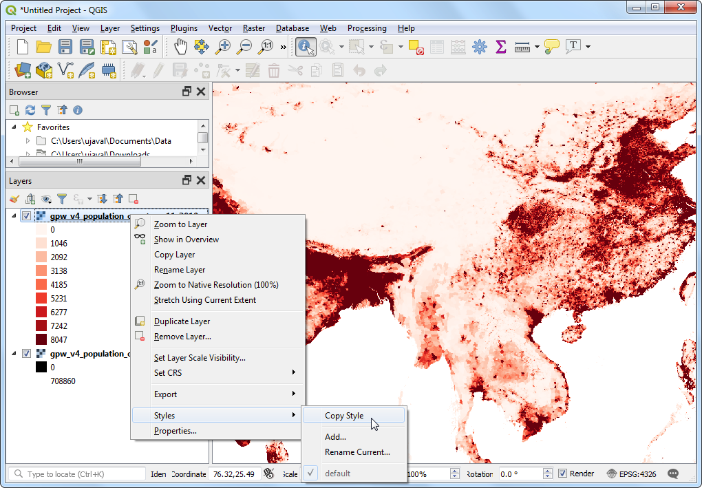
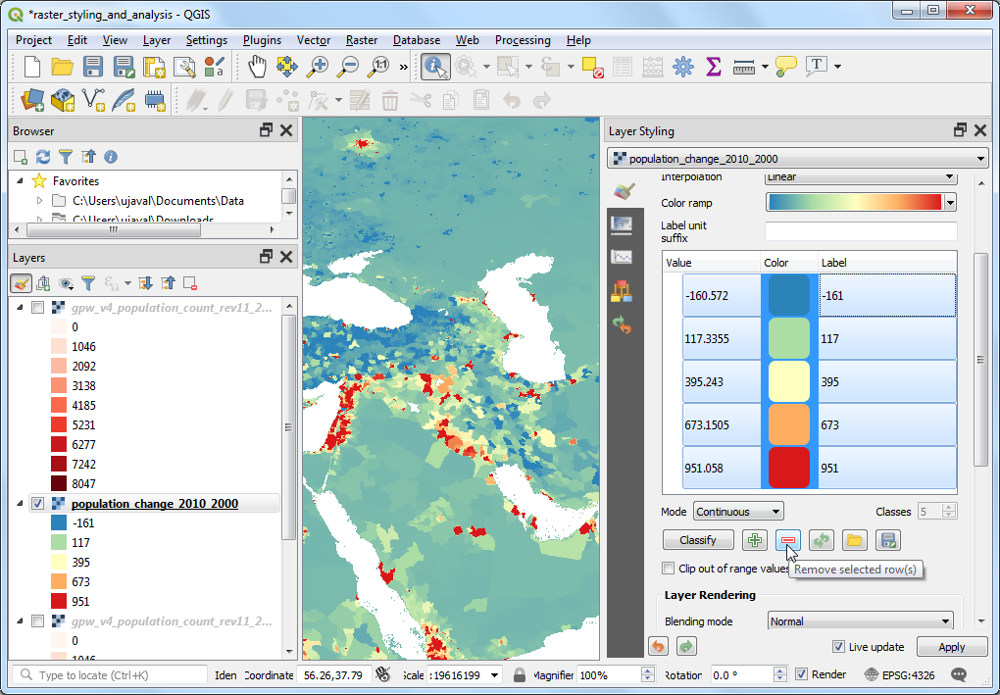
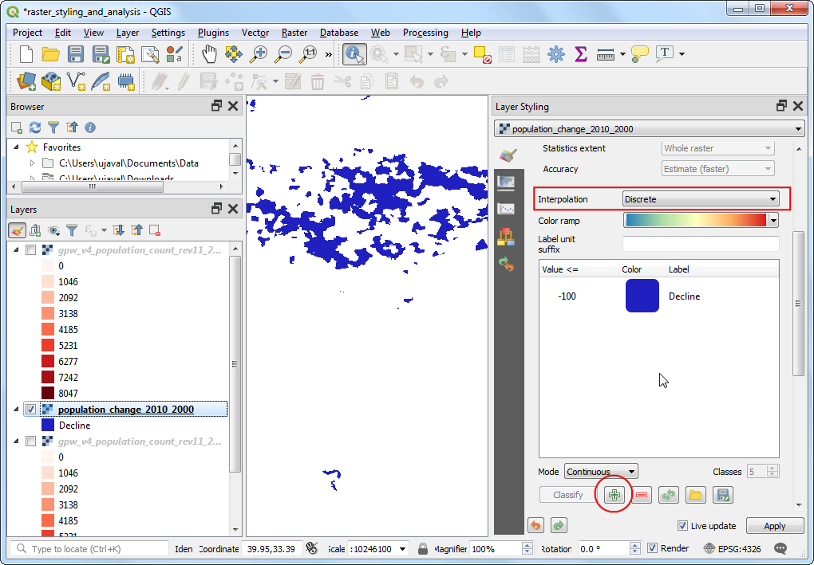

Ujaval Gandhi
Ujaval GandhiBasis opmaken en analyses van rasters (QGIS3)¶
Veel wetenschappelijke waarnemingen en onderzoek produceren gegevenssets als rasters. Rasters zijn rasters van pixels die een specifieke waarde hebben toegewezen gekregen. Door rekenkundige bewerkingen op deze waarden uit te voeren, kan men enkele interessante analyses uitvoeren. QGIS heeft enkele ingebouwde mogelijkheden voor basisanalyses via Rasterberekeningen. In deze handleiding zullen we beschikbare opties voor het opmaken van rasters en de door Rasterberekeningen verschafte functionaliteit verkennen.
Overzicht van de taak¶
We zullen rastergegevens voor bevolkingsdichtheid gebruiken om een thematische kaart te maken voor de wijziging in de wereldbevolking tussen de jaren 2000 en 2010.
Andere vaardigheden die u zult leren¶
Hoe stijlen te kopiëren/plakken tussen lagen
De gegevens ophalen¶
We zullen de gegevensset Gridded Population of the World (GPW) v4 van de Columbia University gebruiken. Specifiek hebben we de Population Count in de resolutie 2.5 Degree Minute in de indeling GeoTiFF voor de gehele wereld nodig voor de jaren 2000 en 2010. U heeft een gratis account voor Earth Data nodig om de gegevens te kunnen downloaden.

Voor het gemak kunt u direct een kopie van de gegevensset downloaden vanaf de links hieronder:
gpw-v4-population-count-rev11_2000_2pt5_min_tif.zip
gpw-v4-population-count-rev11_2010_2pt5_min_tif.zip
Gegevensbron [GPW4]
Procedure¶
Open QGIS en zoek naar de gedownloade bestanden in het paneel Browser. Vergroot het bestand
gpw-v4-population-count-rev11_2000_2pt5_min_tif.zipen sleep het bestandgpw-v4-population-count-rev11_2000_2pt5_min.tifnaar het kaartvenster.

Een nieuwe laag
gpw-v4-population-count-rev11_2000_2pt5_minzal zijn toegevoegd aan het paneel Lagen. Zoek op soortgelijke wijze naar het bestandgpw-v4-population-count-rev11_2010_2pt5_min_tif.zipen sleep het bestandgpw-v4-population-count-rev11_2010_2pt5_min.tifin het kaartvenster.

Laten we deze lagen eens verkennen. Klik op de knop Objecten identificeren op de werkbalk Attributen. Klik, als het gereedschap is geselecteerd, op een punt in het kaartvenster.

De waarde die is geassocieerd met die pixel zal wordne weergegeven in een nieuw paneel Identificatieresultaten. In het paneel Identificatieresultaten, wijzig de Modus naar
Van bovenaf. Dat zal de waarden van de pixels van alle rasters weergeven in plaats van alleen de bovenste laag. Vergelijk de waarden uit beide lagen. De waarden van de pixels vertegenwoordigen de totale bevolking in het gebied (25 km²) dat wordt weergegeven door de pixel, omdat de resolutie van de rasters bij benadering 5km x 5km is.

Sluit het paneel Identificatieresultaten. Laten we een betere visualisatie van de lagen maken. Klik op de knop Paneel Laag opmaken openen in het paneel Lagen.

Klik, in het paneel Laag opmaken, op de keuzelijst Type renderer en selecteer de renderer
Enkelbands pseudokleur.

Deze renderer zal de laag opmaken met een kleurverloop. Het standaard kleurverloop is wit-rood waar de minimum waarde de witte kleur toegewezen zal krijgen en de maximum waarde in de laag zal de rode kleur toegewezen krijgen. De tussenliggende waarden zullen een tint van de rode lineaire interpolatie krijgen toewezen. Vergroot de Instellingen Min / max-waarden en kies de optie
Cumulatieve telling deel. U zult zien dat de visualisatie van de kaart nu veel beter is. Het standaard gegevensbereik is ingesteld van 2% tot en met 98% van de waarden van de gegevens, wat betekent dat uitschieters niet zullen worden gebruikt om de minimum en maximum waarden in te stellen, wat resulteert in een veel meer representatieve visualisatie.

Sluit het paneel Laag opmaken. We kunnen ook dezelfde stijl toepassen op de andere laag. Maar er is een gemakkelijker manier om stijlen over te brengen van de ene laag naar een andere. Klik met rechts op de laag
gpw-v4-population-count-rev11_2010_2pt5_minen selecteer .

Klik nu met rechts op de niet opgemaakte laag
gpw-v4-population-count-rev11_2000_2pt5_minen selecteer .

Dezelfde parameters voor de opmaak zullen worden toegepast op de andere laag. Deze mogelijkheid is in het bijzonder nuttig als u verschillende lagen wilt vergelijken met dezelfde categorieën. Als u schakelt met de zichtbaarheid van de bovenste laag zult u de wijzigingen in de bevolking visueel zien.

Our task is to create a thematic map of the changes in population. Let’s compute the difference between the 2 layers and create another raster where each pixel represents the change in the population. Go to .

Look for Raster Calculator under Raster Analysis and double-click to open the tool.

Select both the layers using … button as Input Layers. The raster calculator can apply mathematical operations on the raster pixels. In this case we want to enter a simple formula to subtract the 2010 population from 2000. Enter the following expression using ε button. In the expression, The bands are named after the raster name followed by
@and band number. Since each of our rasters have only 1 band, you will see the names with@1appended to the layer name. Keep all the other options as default and save the output layer with the namepopulation_change_2010_2000.tifand click Run.
"gpw_v4_population_count_rev11_2010_2pt5_min.tif@1" - "gpw_v4_population_count_rev11_2000_2pt5_min.tif@1"
Eenmaal voltooid zal een nieuwe laag
population_change_2010_2000zijn toegevoegd aan het paneel Lagen. Laten we de opmaak wijzigen zodat de negatieve en positieve veranderingen in de bevolking beter worden gevisualiseerd. Klik op de knop Paneel Laag opmaken openen in het paneel Lagen.

Één optie is om dezelfde techniek voor opmaken te gebruiken als eerder en een ander kleurverloop te kiezen. Klik op de keuzelijst Kleurverloop en selecteer kleurverloop
Spectral. Klik opnieuw op de keuzelijst en kiesKleurverloop omdraaienom blauwe kleuren aan lage waarden toe te wijzen en rood aan hogere waarden.

Dit is een goede visualisatie, maar niet eenvoudig te interpreteren. Laten we een betere kaart maken met 4 afzonderlijke categorieën,
Verminderd,Neutraal,GegroeidenVeel gegroeid. Scroll naar beneden naar de tabellen met klassen. Houd de Shift-toets ingedrukt en selecteer alle rijen. Klik op de knop Remove selected row(s).

Wijzig de modus van Interpolatie naar
Discrete. We zullen nu handmatig een kaart inkleuren. Klik op de knop Voeg handmatig waarden in. Voer-100in als de Waarde enVerminderdals het Label. Wijs de kleur blauw toe aan deze categorie. De manier waarop het inkleuren werkt is dat alle waarden die lager zijn dan de ingegeven waarde de kleur van dat item zullen krijgen. U zult zien dat het kaartvenster alleen die gebieden zal weergeven die een negatieve verandering in de bevolking hebben.

Voltooi de kleurenkaart met geschikte waarden. Ik koos
100,1000en100000als de bovengrenzen voor de respectievelijke categorieënNeutraal,GegroeidenVeel gegroeid. Wijs kleuren toe aan elk van de gemaakte categorieën, bijvoorbeeld beige, oranje en rood.

Als u eenmaal tevreden bent met de visualisatie, sluit het paneel Laag opmaken. U heeft nu een globale thematische kaart van veranderingen in de bevolking.

If you want to give feedback or share your experience with this tutorial, please comment below. (requires GitHub account)